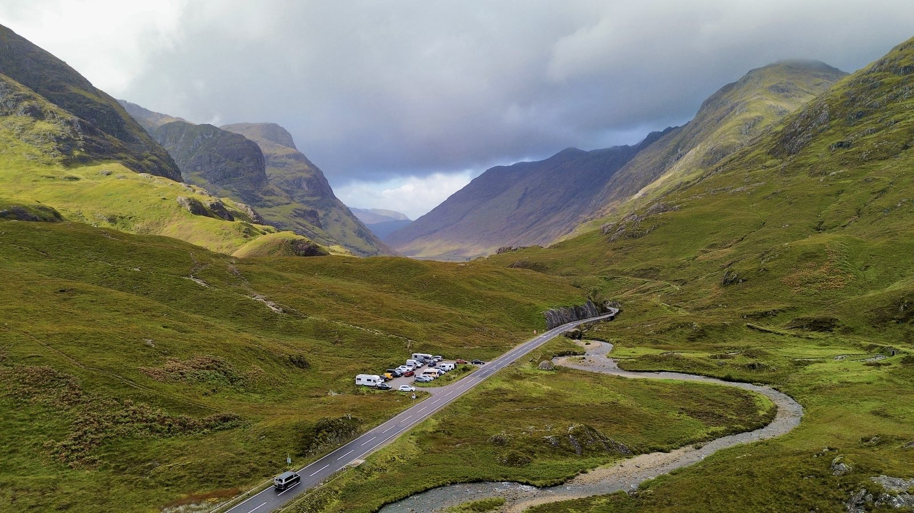
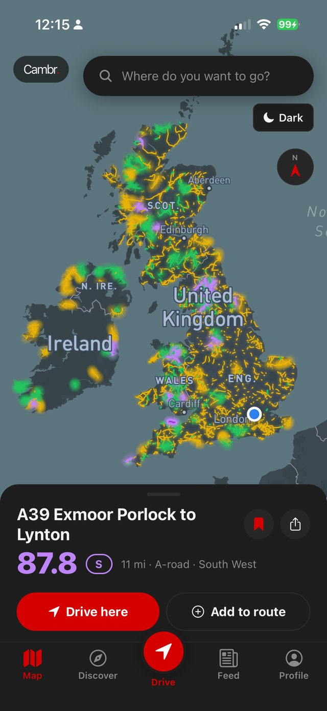
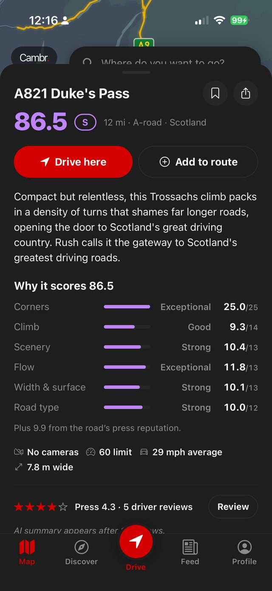
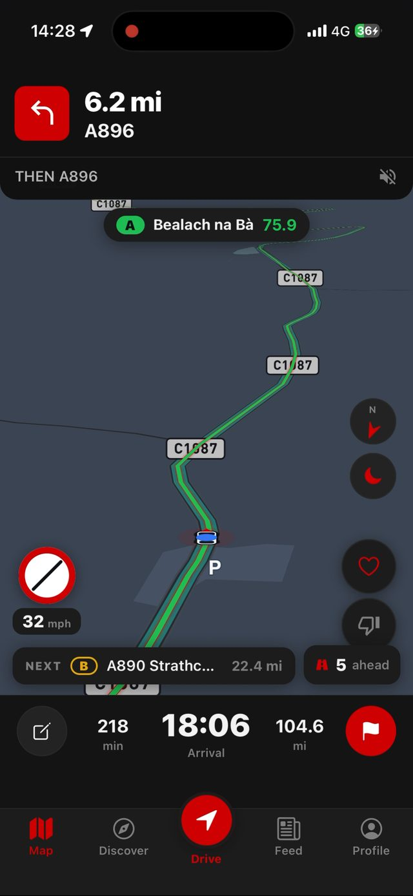

Now live in beta testingOut now · iPhone and Android
No-one has ever created a map of great driving roads. So we did.
We measured every road in the UK, scored them on the six things that make a drive worth taking, and built a map that plans your route through the great ones instead of around them.
UK now. Europe next.
Founding-member pricing for life for the first 100 people to create an account and test Cambr.
You're on the list. We'll be in touch before launch.
Something went wrong — please try again.

Cambr is a UK iPhone and Android app that scores every driving road in Britain and Ireland for how good it is to drive, and builds routes along the best of them rather than the quickest. It was built for people who choose the long way home.
North Pennines to Swaledale · the best driving route in the UK
We've built a working map of the best roads in the UK and a routing engine that gets you to all of them. Includes all the most legendary sections of road — and some you might never have heard of.

Every road measured on the same six things the app shows you when you tap a road — corners, climb, scenery, flow, width and surface, and road type. Cameras, speed limits and how fast traffic genuinely moves all feed into those. Every driving road in Britain and Ireland, sorted into three tiers:
The 22 highest-scoring roads in Britain and Ireland. The creme-de-la-creme of driving roads and the ones you plan a weekend around, every single one has been written about extensively by the motoring press.
The best of the rest. Excellent roads that are worth going out of your way for. A-Tier roads form the backbone of a proper drive — some you'll know about, lots you won't.
Great, fun roads that are worth grabbing when you're already near. The kind of backroads the locals might tell you about when you ask for their favourites.
Those algorithmic score numbers are all calibrated against the motoring press you already trust — Evo, Autocar, Top Gear, PistonHeads and over 20 more — as well as against what drivers say on the ground in forums, videos and direct recommendations.
Tell Cambr where you're headed and it threads your route through the very best roads it can reach on the way. Choose how much time you'll trade for a better road: Fastest, Quick, Driver's Route or Extended. Or generate a loop from where you are, tell it how long you've got and which direction you fancy, and get a route that brings you home.
Open the map, see every great road near you, colour-coded by score. Tap to see why, and get the best route to drive them. There are 71 car spots on there too, the meets and cafes worth ending a drive at.
Planned a route? Drive it inside Cambr. Our own driving interface calls out every scored road as you reach it, instead of handing you off to Google Maps.
46 drives and loops built by hand on the best roads in Britain. Find one near you, see how much of it is on great road before you set off, and drive it turn by turn.
No destination, just an afternoon? Tell Cambr how long you've got and which direction you fancy, and it builds a round trip through the best roads in reach that brings you home.
Build your own trip with up to five stops. Add the roads you want to drive straight from the map, and Cambr routes you between them along the best roads it can find.
Drove a road we underrate? Let us know. Community feedback helps to build Cambr and directly impacts the road scores. AllTrails for roads.

Our team has wanted an app like Cambr for years — so we decided to build it.
Most route planners start with a search box or a chatbot. Cambr starts with a map of every scored road. Pick the roads you want and Cambr joins them into a drive, navigates you along it and records it for you to keep or share.
| Feature | Map appsBuilt to get you there fast | AI route plannersRoutes written by a model | |
|---|---|---|---|
| Picks your route by | Arrival time | An AI's suggestion | Scored road quality |
| Every road scored out of 100, on a map you can explore | No | No | Yes |
| Scores checked against 30 years of motoring press | No | No | Yes |
| Build a route by picking roads off the map | No | No | Yes |
| Navigation that tells you the score of the road you're on | No | No | Yes |
| Drivers' ratings feed back into the road scores | No | No | Yes |
| On iPhone and Android | Yes | iPhone or web only | Yes |
Cambr is in beta on iPhone and Android now, and the list of what's coming is a long one. Here it is, in the order it's arriving.
Plan an epic route and share it with the crew. Stay together, see everyone live on the route, chat to each other. Real-life Forza Horizon.
Like and comment on other drivers' drives, add photos to yours, and give your profile a photo and a short bio.
Turn-by-turn with the phone on its side, for mounts that sit that way.
Cambr on your car's own screen, scores and all.
Ireland and 71 great European roads are already scored and on the map. Turn-by-turn routes there come next.
Tell Cambr you've got an adventure coming up and it builds the whole trip: the best roads, overnight stops and the most epic views.
Fuel along your route before you need it, and live voice for everyone in the convoy.
Navigation that keeps going when the signal doesn't.
Everyone loves to hear their car in a tunnel. Find the best ones and add them to your route so you never miss out on the noise.
Cambr does exactly that. Open the map and the scored roads near you are picked out in tier colours, with the best ones named as you zoom out.
An algorithm measures corners, climb, protected landscape, road class, width, surface, how fast traffic really moves and camera coverage, producing a score out of 100. For founding roads that is combined with what the motoring press has written about the road. S tier is 77 and above, A tier is 67 to 76.9, B tier is 55 to 66.9.
Yes. Cambr is in testing on iPhone and Android now, and will launch on both on the same day. Join the email list and we'll tell you when.
Offline maps are on the roadmap. Until they arrive, Cambr needs a mobile signal to navigate.
Yes. Tell it how long you have and which direction you want to head, and it builds a loop that brings you back to where you started, avoiding motorways.
The map does. Every driving road in Ireland is scored, and 71 European roads are on there too. Turn-by-turn routing covers Great Britain today, with Ireland and Europe on the way.
It warns you about fixed cameras and average-speed zones as part of navigation, the same as most sat-nav apps. Camera density is also one of the signals in the score, because a road under constant enforcement is a worse road to drive.
Drivers and riders who care about the road itself. People who own something they enjoy driving, who plan weekends around a route, and who would rather add forty minutes than sit on a motorway.
Every road in Britain and Ireland, scored. 46 drives and loops ready to go, and a route builder for the ones you invent yourself.
We're launching this year. Get on the list for early access.
You're on the list. We'll be in touch before launch.
Something went wrong — please try again.